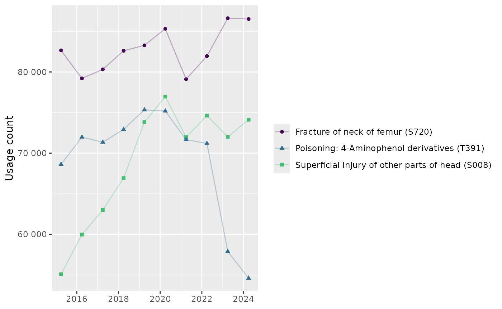

Load codelist
# Import the codelist from OpenCodelists.org
icd10_xix_codelist <- get_codelist("opensafely/icd-10-chapter-xix/4dce479b/")
# Return the first 10 rows of the codelist
as_tibble(icd10_xix_codelist)
#> # A tibble: 1,483 × 2
#> code term
#> <chr> <chr>
#> 1 S00 Superficial injury of head
#> 2 S00-S09 Injuries to the head
#> 3 S000 Superficial injury of scalp
#> 4 S001 Contusion of eyelid and periocular area
#> 5 S002 Other superficial injuries of eyelid and periocular area
#> 6 S003 Superficial injury of nose
#> 7 S004 Superficial injury of ear
#> 8 S005 Superficial injury of lip and oral cavity
#> 9 S007 Multiple superficial injuries of head
#> 10 S008 Superficial injury of other parts of head
#> # ℹ 1,473 more rowsCalculate codes with most usage
# Select 3 most frequently used codes
top3_icd10_xix_codes <- df_icd10_xix |>
group_by(icd10_code, description) |>
summarise(total_usage = sum(usage)) |>
ungroup() |>
slice_max(total_usage, n = 3) |>
pull(icd10_code)
#> `summarise()` has grouped output by 'icd10_code'. You can override using the
#> `.groups` argument.Visualise trends over time
plot_top3_icd10_xix <- df_icd10_xix |>
filter(icd10_code %in% top3_icd10_xix_codes) |>
ggplot(aes(
x = end_date,
y = usage,
colour = paste0(description, " (", icd10_code, ")"),
shape = paste0(description, " (", icd10_code, ")"))
) +
geom_line(alpha = .3) +
geom_point() +
scale_y_continuous(labels = scales::label_number(accuracy = 1)) +
scale_x_date() +
scale_colour_viridis_d(end = .7) +
labs(
x = NULL, y = "Usage count",
colour = NULL, shape = NULL
)
plot_top3_icd10_xix